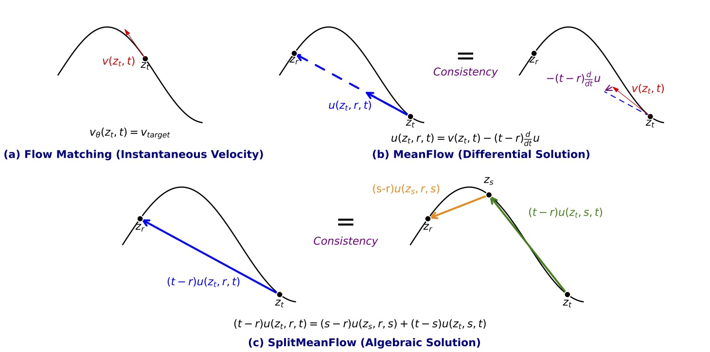

SplitMeanFlow:
Interval Splitting Consistency in Few-step Speech Generation
Abstract. Flow Matching has achieved state-of-the-art performance in generative modeling but is hindered by the computational cost of iterative sampling. Recent methods like MeanFlow learn the average velocity field instead of instantaneous velocities, showing promise in image generation. In this work, we argue that the differential formulation in MeanFlow is a special case of a more fundamental principle. By returning to the first principles of average velocity, we derive an algebraic identity termed Interval Splitting Consistency. We introduce SplitMeanFlow, a new framework that enforces this algebraic consistency directly as a learning objective. We demonstrate that SplitMeanFlow recovers MeanFlow's differential identity in the limit, providing a more general and robust foundation for learning average velocity fields. SplitMeanFlow simplifies training, enhances compatibility with network architectures, and enables one-step synthesis without requiring Classifier-Free Guidance (CFG). Experiments demonstrate that SplitMeanFlow achieves a 10x speedup and a 20x reduction in computational cost for large-scale speech synthesis tasks, providing substantial improvements in efficiency without compromising speech quality.
Contents
Method Overview

Figure 1. Conceptual Comparison of Flow Matching and IntMeanFlow
SplitMeanFlow x F5-TTS
| Language | Prompt | Human | F5 Base (NFE=32) | F5 Base x SMF (NFE=3) | F5 Base x SMF (NFE=4) |
|---|---|---|---|---|---|
| EN | |||||
| ZH | |||||
SplitMeanFlow x CosyVoice2
| Prompt | Human | CosyVoice2 (NFE=32) | CosyVoice2 x MF (NFE=1) | CosyVoice2 x SMF (NFE=1) |
|---|---|---|---|---|
SplitMeanFlow x Seed-TTSSFT
| Seed-TTSSFT (NFE=10) | Seed-TTSSFT x DMD (NFE=2) | Seed-TTSSFT x SMF (NFE=2) |
|---|---|---|
SplitMeanFlow x Seed-TTSICL
| Prompt | Seed-TTSICL (NFE=10) | Seed-TTSICL x SMF (NFE=1) | Seed-TTSICL x SMF (NFE=2) |
|---|---|---|---|
SplitMeanFlow x DiTARSFT
| Language | DiTAR (NFE=10) | DiTAR x SMF (NFE=1) | DiTAR x SMF (NFE=2) |
|---|---|---|---|
| EN | |||
| ZH | |||